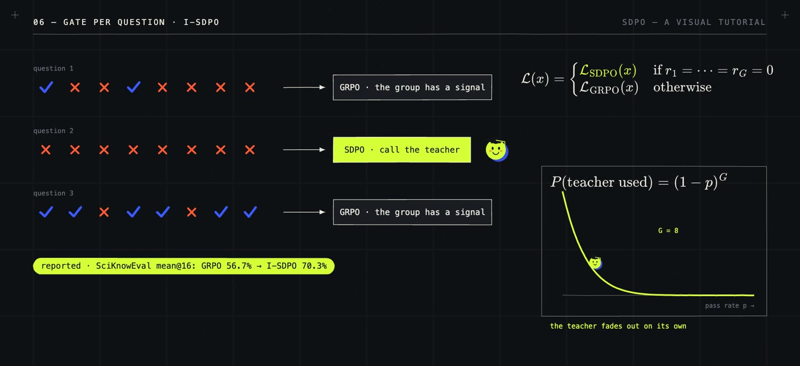

/ 6:40 VIDEO · 3 MIN READ
SDPO with hindsight:
when not to follow the teacher.
A failing program often comes back with an explanation: a compiler error, a stack trace, or a test showing where its behavior diverged from the requirement. Reinforcement learning with verifiable rewards can reduce all that information to a zero. Every token in the attempt receives the same outcome signal, even when the environment has told us something much more specific.
Self-Distillation Policy Optimization (SDPO, January 2026) uses the model twice: once to attempt the task, and once to reconsider that attempt with the feedback in view. The teacher has no larger brain. It has a better vantage point.
There are two precedents. Hindsight Experience Replay (2017) made failed robot attempts useful by relabeling them with goals they had actually reached. context distillation (2022) transferred behavior induced by a long prompt into a model that no longer needed that prompt, while on-policy distillation (2023) trained students on their own samples with token-level teacher feedback. SDPO brings hindsight into that distillation loop.
The same model, with different information
The student sees the question \(x\). The teacher sees \(x\) and feedback \(f\), which can include an error message or a successful attempt from the same batch. Both score the student's completion \(y\) token by token:
\[\pi_S(\cdot \mid y_{\lt t}) = \pi_\theta(\cdot \mid x, y_{\lt t}), \qquad \pi_T(\cdot \mid y_{\lt t}) = \pi_\theta(\cdot \mid x, f, y_{\lt t}).\]
Training minimizes the student's divergence from the feedback-conditioned teacher, using stop-gradient through the teacher for each update:
\[\mathcal{L}_{\text{SDPO}}(\theta) = \sum_t \mathrm{KL}\Big(\pi_S(\cdot \mid y_{\lt t}) \,\Big\|\, \mathrm{sg}\big[\pi_T(\cdot \mid y_{\lt t})\big]\Big).\]
The teacher can evolve during training; stop-gradient prevents differentiating through its target in the current update. The learning signal involves a token-specific log-probability difference, \(\log \pi_T(y_t) - \log \pi_S(y_t)\). Tokens preferred in hindsight receive a different signal from tokens the teacher would avoid. This is denser credit assignment, although it is not proof that the teacher has correctly identified which token caused the failure. The paper reports 48.8% against 41.2% for GRPO on LiveCodeBench v6, with shorter answers.
When does hindsight become a bad teacher?
The useful information is also the source of the difficulty. At test time, the student does not have the feedback from a future failed attempt. A teacher that already knows the answer can prefer a shortcut the student has no way to reproduce. Following it everywhere can also overwrite correct behavior or reduce exploration. More detailed supervision is valuable only when it teaches something available to the student in the setting where it will act.
I-SDPO calls the teacher only when every attempt in the group fails. For \(G\) independent attempts with success rate \(p\), that happens with probability \((1-p)^G\). As the policy improves, it consults the teacher less often. On SciKnowEval, the paper reports average mean@16 accuracy of 70.3% against 56.7% for GRPO.

Other methods decide how much of the teacher's advice to use. Pass-rate weighting scales questions by \(\sqrt{\hat p(1-\hat p)}\), emphasizing intermediate difficulty. ROSD, PW-OPSD, SA-OPD, and USD select which tokens to correct. DemoPSD makes the target a blend, \(q_t \propto \pi_T^{\alpha_t}\, \pi_S^{1-\alpha_t}\), rather than asking the student to copy the teacher completely. These interventions change where the extra information is allowed to influence learning.
The approach depends on the quality of the feedback and the model's ability to use it. It also has costs outside the current task: Denser ≠ Better finds more forgetting under dense self-distillation than under GRPO in continual training. The question is therefore not simply whether a richer signal improves the next answer. It is which lessons survive when hindsight is removed, and which existing abilities they displace.